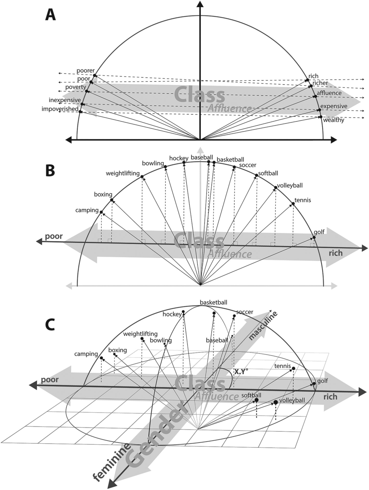
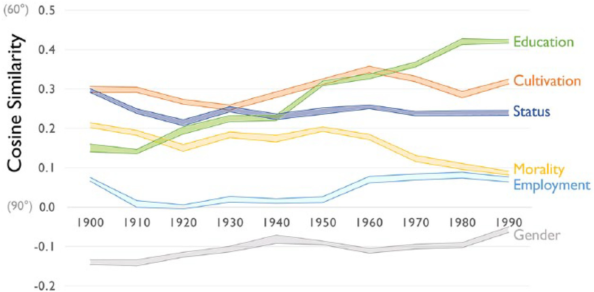
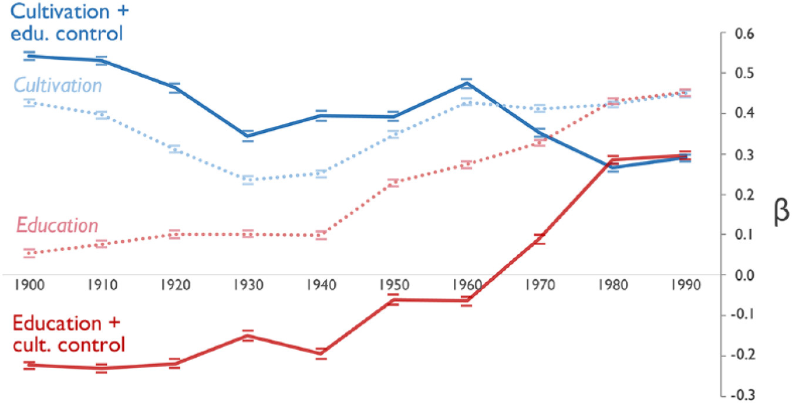
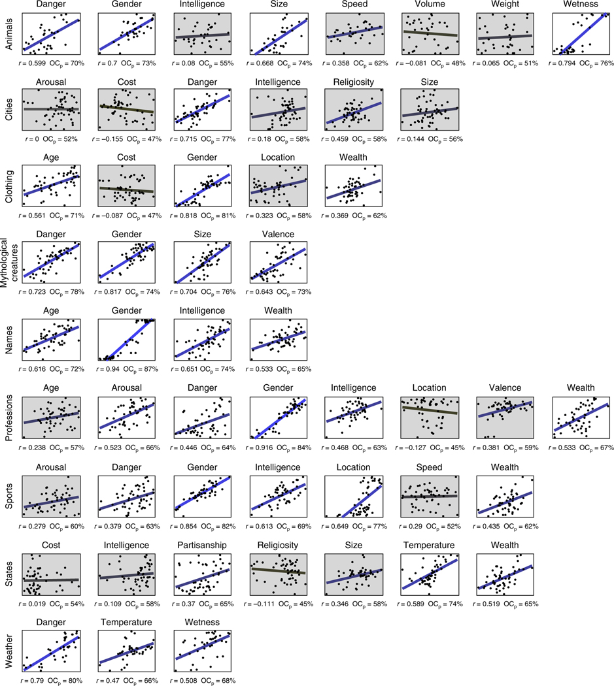
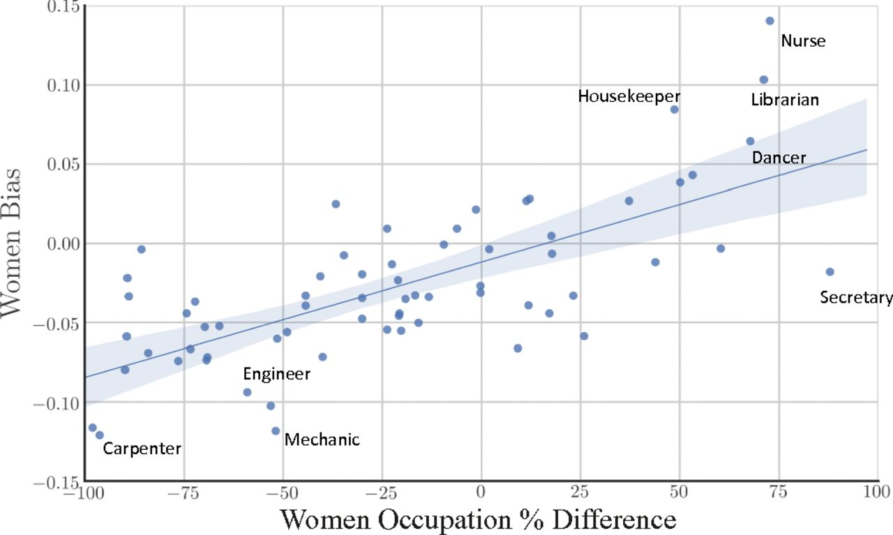

Word2Vecが人文・社会科学研究における応用
Contents
Word2Vecが人文・社会科学研究における応用#
The Geometry of Culture: Analyzing the Meanings of Class through Word Embeddings [Kozlowski et al., 2019]#
問題関心#
「階層」という概念は多次元な側面より構成されています
Affluence
Occupation
Symbolic Manifestations(social honor and prestige)
Gender
「階層」という概念は時間とともに変化しています
方法#

Cultural Dimensionsの測定#
Cultural Dimensionsの測定は、単語分散表現を用いて類推問題を解決する能力を活用しています。
文化的な概念を反映する単語のペア間のベクトル計算でCultural Dimensionsを測定することが可能です(\(A\))。
\(\vec{male}-\vec{female}\)は\(Gender\)という概念反映しています。同じロジックで、\(\vec{king}-\vec{queen}\)のような単語のペアも\(Gender\)という概念を反映できると考えられます。
\(\vec{rich}-\vec{poor}\)、\(\vec{affluence}-\vec{poverty}\)のような単語のペアは\(Affluence\)という概念を反映できると考えられます。
import gensim.downloader
model = gensim.downloader.load('word2vec-google-news-300')
---------------------------------------------------------------------------
TypeError Traceback (most recent call last)
File /opt/anaconda3/envs/jupyterbook/lib/python3.10/site-packages/numpy/core/numerictypes.py:321, in issubclass_(arg1, arg2)
320 try:
--> 321 return issubclass(arg1, arg2)
322 except TypeError:
TypeError: issubclass() arg 1 must be a class
During handling of the above exception, another exception occurred:
KeyboardInterrupt Traceback (most recent call last)
Cell In[1], line 2
1 import gensim.downloader
----> 2 model = gensim.downloader.load('word2vec-google-news-300')
File /opt/anaconda3/envs/jupyterbook/lib/python3.10/site-packages/gensim/downloader.py:503, in load(name, return_path)
501 sys.path.insert(0, BASE_DIR)
502 module = __import__(name)
--> 503 return module.load_data()
File ~/gensim-data/word2vec-google-news-300/__init__.py:8, in load_data()
6 def load_data():
7 path = os.path.join(base_dir, 'word2vec-google-news-300', "word2vec-google-news-300.gz")
----> 8 model = KeyedVectors.load_word2vec_format(path, binary=True)
9 return model
File /opt/anaconda3/envs/jupyterbook/lib/python3.10/site-packages/gensim/models/keyedvectors.py:1719, in KeyedVectors.load_word2vec_format(cls, fname, fvocab, binary, encoding, unicode_errors, limit, datatype, no_header)
1672 @classmethod
1673 def load_word2vec_format(
1674 cls, fname, fvocab=None, binary=False, encoding='utf8', unicode_errors='strict',
1675 limit=None, datatype=REAL, no_header=False,
1676 ):
1677 """Load KeyedVectors from a file produced by the original C word2vec-tool format.
1678
1679 Warnings
(...)
1717
1718 """
-> 1719 return _load_word2vec_format(
1720 cls, fname, fvocab=fvocab, binary=binary, encoding=encoding, unicode_errors=unicode_errors,
1721 limit=limit, datatype=datatype, no_header=no_header,
1722 )
File /opt/anaconda3/envs/jupyterbook/lib/python3.10/site-packages/gensim/models/keyedvectors.py:2065, in _load_word2vec_format(cls, fname, fvocab, binary, encoding, unicode_errors, limit, datatype, no_header, binary_chunk_size)
2062 kv = cls(vector_size, vocab_size, dtype=datatype)
2064 if binary:
-> 2065 _word2vec_read_binary(
2066 fin, kv, counts, vocab_size, vector_size, datatype, unicode_errors, binary_chunk_size, encoding
2067 )
2068 else:
2069 _word2vec_read_text(fin, kv, counts, vocab_size, vector_size, datatype, unicode_errors, encoding)
File /opt/anaconda3/envs/jupyterbook/lib/python3.10/site-packages/gensim/models/keyedvectors.py:1960, in _word2vec_read_binary(fin, kv, counts, vocab_size, vector_size, datatype, unicode_errors, binary_chunk_size, encoding)
1958 new_chunk = fin.read(binary_chunk_size)
1959 chunk += new_chunk
-> 1960 processed_words, chunk = _add_bytes_to_kv(
1961 kv, counts, chunk, vocab_size, vector_size, datatype, unicode_errors, encoding)
1962 tot_processed_words += processed_words
1963 if len(new_chunk) < binary_chunk_size:
File /opt/anaconda3/envs/jupyterbook/lib/python3.10/site-packages/gensim/models/keyedvectors.py:1943, in _add_bytes_to_kv(kv, counts, chunk, vocab_size, vector_size, datatype, unicode_errors, encoding)
1941 word = word.lstrip('\n')
1942 vector = frombuffer(chunk, offset=i_vector, count=vector_size, dtype=REAL).astype(datatype)
-> 1943 _add_word_to_kv(kv, counts, word, vector, vocab_size)
1944 start = i_vector + bytes_per_vector
1945 processed_words += 1
File /opt/anaconda3/envs/jupyterbook/lib/python3.10/site-packages/gensim/models/keyedvectors.py:1923, in _add_word_to_kv(kv, counts, word, weights, vocab_size)
1921 logger.warning("vocabulary file is incomplete: '%s' is missing", word)
1922 word_count = None
-> 1923 kv.set_vecattr(word, 'count', word_count)
File /opt/anaconda3/envs/jupyterbook/lib/python3.10/site-packages/gensim/models/keyedvectors.py:353, in KeyedVectors.set_vecattr(self, key, attr, val)
334 def set_vecattr(self, key, attr, val):
335 """Set attribute associated with the given key to value.
336
337 Parameters
(...)
351
352 """
--> 353 self.allocate_vecattrs(attrs=[attr], types=[type(val)])
354 index = self.get_index(key)
355 self.expandos[attr][index] = val
File /opt/anaconda3/envs/jupyterbook/lib/python3.10/site-packages/gensim/models/keyedvectors.py:323, in KeyedVectors.allocate_vecattrs(self, attrs, types)
321 continue
322 prev_expando = self.expandos[attr]
--> 323 if not np.issubdtype(t, prev_expando.dtype):
324 raise TypeError(
325 f"Can't allocate type {t} for attribute {attr}, "
326 f"conflicts with its existing type {prev_expando.dtype}"
327 )
328 if len(prev_expando) == target_size:
File /opt/anaconda3/envs/jupyterbook/lib/python3.10/site-packages/numpy/core/numerictypes.py:419, in issubdtype(arg1, arg2)
417 if not issubclass_(arg1, generic):
418 arg1 = dtype(arg1).type
--> 419 if not issubclass_(arg2, generic):
420 arg2 = dtype(arg2).type
422 return issubclass(arg1, arg2)
File /opt/anaconda3/envs/jupyterbook/lib/python3.10/site-packages/numpy/core/numerictypes.py:321, in issubclass_(arg1, arg2)
286 """
287 Determine if a class is a subclass of a second class.
288
(...)
318
319 """
320 try:
--> 321 return issubclass(arg1, arg2)
322 except TypeError:
323 return False
KeyboardInterrupt:
rich_list=["rich","richer","affluence","luxury"]
poor_list=["poor","poorer","poverty","cheap"]
import numpy as np
affluence_vec=[]
for i,j in zip(rich_list,poor_list):
affluence_vec.append(model[i]-model[j])
affluence_vec=np.array(affluence_vec)
affluence_vec=np.mean(affluence_vec,axis=0)
なぜ複数の単語ペアで計算する必要がありますか？
単語ペアでベクトル減法を行なって、結果の平均を取る方法以外、Dimensionsを測定する方法がありますか？
Cultural Dimensionsで概念の「理解」#
ある単語を「Cultural Dimensions」でどのように解釈されるかを、その単語のベクトルと文化的次元ベクトルとの間の角度を計算することで求めるのです。(\(B\))
この角度が小さいほど、その単語はその文化的次元に強く関連していると言えます。この方法により、単語が持つ文化的な意味合いやニュアンスを数値的に分析することが可能になります。
def get_consine(vector, dimension):
"""
Calculate the angle between the vector and the given dimension
"""
v_dot_d = np.dot(vector, dimension)
v_d = np.linalg.norm(vector) * np.linalg.norm(dimension)
return v_dot_d / v_d
get_consine(model["tennis"],affluence_vec)
0.10311404
from sklearn.metrics.pairwise import cosine_similarity
cosine_similarity(model["tennis"].reshape(1,-1),affluence_vec.reshape(1,-1))
array([[0.10311404]], dtype=float32)
def get_angle(vector, dimension,degree=False):
"""
Calculate the angle between the vector and the given dimension
"""
c = get_consine(vector, dimension)
if degree:
return np.degrees(np.arccos(np.clip(c, -1, 1)))
else:
return np.arccos(np.clip(c, -1, 1)) #return radian
sports=["tennis","soccer","basketball","boxing","golf","swimming","volleyball","camping","weightlifting","hiking","hockey"]
for sport in sports:
print(sport,get_angle(model[sport],affluence_vec,degree=True))
tennis 84.08148088988168
soccer 86.44827814928067
basketball 87.4947624687713
boxing 96.19771983578752
golf 81.23038078574373
swimming 87.66950350249786
volleyball 84.87990835557244
camping 92.64046862065912
weightlifting 92.84652198285549
hiking 89.06679342925825
hockey 88.2316913132707
この結果をどのように解釈すべきですか？
性別に関するDimensionを作成しなさい
性別Dimensionで運動の位置付けを確認し、その結果を解釈しなさい
male_list=["man","men","his","his","he","male","masculine"]
female_list=["woman","women","her","hers","she","female","feminine"]
import numpy as np
male_vec=[]
for i,j in zip(male_list,female_list):
male_vec.append(model[i]-model[j])
male_vec=np.array(male_vec)
male_vec=np.mean(male_vec,axis=0)
for sport in sports:
print(sport,get_angle(model[sport],male_vec,degree=True))
tennis 97.40878931781465
soccer 91.80367294960222
basketball 92.62550110826957
boxing 88.10336004089726
golf 89.92069959744806
swimming 95.5663930896144
volleyball 102.37309292835671
camping 90.67382084420579
weightlifting 90.39126375746197
hiking 93.58319273998538
hockey 89.98937662535967
Class意味の推移#
階層という概念は多次元な側面より構成されて、さらにその構成は時間とともに変化している。
Cultural Dimensionsを構築することで、「階層」の各構成の「意味」を定量的に測定する
「Affluence」が他の要素とどのように関係していることは、階層の意味構成を説明している
def create_vector(word_pair):
vec=[]
for i in word_pair:
vec.append(model[i[0]]-model[i[1]])
vec=np.array(vec)
vec=np.mean(vec,axis=0)
return vec
education_pair=[("educated","uneducated"),("learned","unlearned"),("taught","untaught"),
("schooled","unschooled"),("trained","untrained"),("lettered","unlettered"),
("tutored","untutored"),("literate","illiterate")]
education_vec=create_vector(education_pair)
gender_pair=[("man","woman"),("men","women"),("he","she"),("him","her"),
("his","her"),("boy","girl"),("male","female"),("masculine","feminine")]
gender_vec=create_vector(gender_pair)
cosine_similarity(gender_vec.reshape(1,-1),affluence_vec.reshape(1,-1))
array([[-0.04156308]], dtype=float32)
cosine_similarity(education_vec.reshape(1,-1),affluence_vec.reshape(1,-1))
array([[0.20604998]], dtype=float32)
この結果をどのように解釈すべきですか？
言語モデルは学習コーパスに含まれている「バイアス」をそのまま反映しています。例えば、言語モデルでは、エンジニア、トラック運転手は男性、モデル、看護師は女性というような、職業と性別の関係についての典型的なステレオタイプを学習していることがわかります。
同様に、異なる時期のコーパスには、特定な時期の考え方や認識に関する情報が含められますので、そのコーパスで学習した言語モデルも特定な時期の考え方や認識を反映できると考えられます。
 
この図の結果をどのように解釈すべきですか？
Word2Vecを応用する研究#
Semantic projection recovers rich human knowledge of multiple object features from word embeddings [Grand et al., 2022]#
単語分散表現は表出する意味的特徴が人間の評価を近似することができることを体系的に説明しました。


Word embeddings quantify 100 years of gender and ethnic stereotypes [Garg et al., 2018]#
単語分散表現が、性別ステレオタイプと民族マイノリティに対する態度の変化を定量化するのにどのように役立つかを示しています。
性別と民族に関する単語で、形容詞や職業などの中立的な単語(neutral words )と比較する手法
性別(男性、女性)と職業に関連する単語リストをまとめます
女性を代表する単語（例：she, female）と職業の単語（例：teacher, lawyer）との間の平均埋め込み距離を計算します
男性を代表する単語と同じ職業の単語との平均埋め込み距離も計算します
女性の平均距離から男性の平均距離を引く結果は「性別バイアス」と考えます。\(\to\) 値がマイナスの場合、該当する職業は男性とより密接に関連付けていることを意味しています

「engineer」、「nurse」、「housekeeper」の\(Gender Bias\)を計算しなさい
Norm distanceはNumpyを使って実装できます
\(Ethnic Bias\)はどのように計算すべきのかを考えなさい。Ethnicのグループでは\(2\)以上であることを注意してください。
同じ手法を使用した研究 []
参考文献#
- DCLT19
Jacob Devlin, Ming-Wei Chang, Kenton Lee, and Kristina Toutanova. \BERT\: Pre-training of Deep Bidirectional Transformers for Language Understanding. In Proceedings of the 2019 Conference of the North \A\merican Chapter of the Association for Computational Linguistics: Human Language Technologies, Volume 1 (Long and Short Papers), Proceedings of the 2019 Conference of the North, 4171–4186. Minneapolis, Minnesota, 2019. Association for Computational Linguistics. URL: https://www.aclweb.org/anthology/N19-1423, doi:10.18653/v1/n19-1423.
- GSJZ18
Nikhil Garg, Londa Schiebinger, Dan Jurafsky, and James Zou. Word embeddings quantify 100 years of gender and ethnic stereotypes. Proceedings of the National Academy of Sciences, 115(16):E3635–E3644, 2018. URL: https://www.pnas.org/doi/abs/10.1073/pnas.1720347115, arXiv:https://www.pnas.org/doi/pdf/10.1073/pnas.1720347115, doi:10.1073/pnas.1720347115.
- GBPF22
Gabriel Grand, Idan Asher Blank, Francisco Pereira, and Evelina Fedorenko. Semantic projection recovers rich human knowledge of multiple object features from word embeddings. Nature Human Behaviour, 6(7):975–987, 2022. doi:10.1038/s41562-022-01316-8.
- KTE19
Austin C. Kozlowski, Matt Taddy, and James A. Evans. The geometry of culture: analyzing the meanings of class through word embeddings. American Sociological Review, 84(5):905–949, 2019. doi:10.1177/0003122419877135.
- LvACW23
Moritz Laurer, Wouter van Atteveldt, Andreu Casas, and Kasper Welbers. Less annotating, more classifying: addressing the data scarcity issue of supervised machine learning with deep transfer learning and bert-nli. Political Analysis, pages 1–17, 2023. doi:10.1017/pan.2023.20.
- MSC+13
Tomas Mikolov, Ilya Sutskever, Kai Chen, Greg S Corrado, and Jeff Dean. Distributed representations of words and phrases and their compositionality. In C.J. Burges, L. Bottou, M. Welling, Z. Ghahramani, and K.Q. Weinberger, editors, Advances in Neural Information Processing Systems, volume 26. Curran Associates, Inc., 2013. URL: https://proceedings.neurips.cc/paper_files/paper/2013/file/9aa42b31882ec039965f3c4923ce901b-Paper.pdf.
- MYZ13
Tomas Mikolov, Wen-tau Yih, and Geoffrey Zweig. Linguistic regularities in continuous space word representations. In Lucy Vanderwende, Hal Daumé III, and Katrin Kirchhoff, editors, Proceedings of the 2013 Conference of the North American Chapter of the Association for Computational Linguistics: Human Language Technologies, 746–751. Atlanta, Georgia, June 2013. Association for Computational Linguistics. URL: https://aclanthology.org/N13-1090.